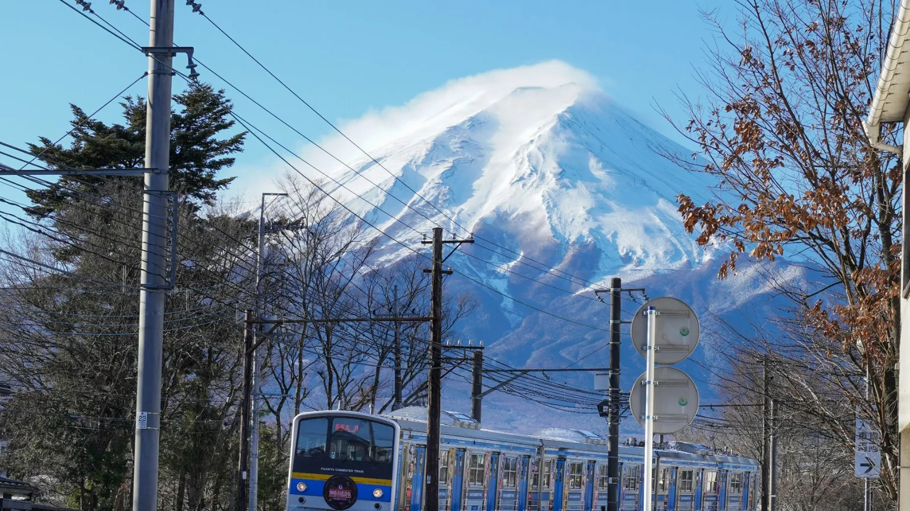

In breve
Prendi lo Shinkansen Nozomi: circa 2 ore e 15 minuti da Tokyo Station a Kyoto Station, treni ogni pochi minuti, circa 14.000 ¥ con posto riservato. Con un budget stretto, il bus notturno ti fa risparmiare una notte d'hotel. L'aereo non conviene quasi mai: Kyoto non ha un aeroporto.
Confronto
| Opzione | Porta a porta | Prezzo (solo andata) | Ideale per |
|---|---|---|---|
| Shinkansen Nozomi | ~2h15 di treno, ~3h in tutto | ~14.000 ¥ riservato | Quasi tutti |
| Shinkansen Hikari | ~2h40 di treno | più o meno uguale | Chi ha il JR Pass |
| Bus diurno | 7–9 ore | ~3.000–8.000 ¥ | Budget minimo, tanto tempo |
| Bus notturno | 8–9 ore di notte | ~4.000–12.000 ¥ | Risparmiare una notte d'hotel |
| Aereo (Haneda → Itami) | 4h+ con i trasferimenti | molto variabile | Quasi mai conveniente |
I prezzi sono indicativi e possono cambiare: verifica sempre prima di partire.
In Shinkansen (linea Tokaido)
- Sali a Tokyo Station o a Shinagawa (comoda per la parte sud di Tokyo); Shin-Yokohama è una terza opzione.
- Il Nozomi è il più veloce; l'Hikari fa più fermate; evita il Kodama, che ferma ovunque (~3h40).
- Compra i biglietti alle macchinette JR, in biglietteria oppure online con l'app SmartEX (accetta carte straniere).
- Il posto riservato conviene nei periodi di punta (Golden Week, Obon, Capodanno, fioritura dei ciliegi).
Hai il JR Pass? Copre Hikari e Kodama. Per il Nozomi serve un biglietto speciale aggiuntivo per la tratta. Leggi Il JR Pass conviene? e la guida completa allo Shinkansen.
In bus autostradale
- Bus diurni e notturni (yako bus) partono da Busta Shinjuku e dalla zona di Tokyo Station, e arrivano a Kyoto Station.
- I posti vanno dai sedili base da 4 per fila a quelli più larghi da 3 per fila con tendine: sui notturni vale la piccola spesa in più.
- Prenota qualche giorno prima: weekend e festivi si esauriscono.
In aereo
Kyoto non ha un aeroporto. Dovresti volare Haneda → Osaka Itami (circa 1h10) e poi prendere bus o treno per Kyoto (circa 1 ora). Tra check-in e trasferimenti è più lento dello Shinkansen e raramente costa meno.
Bagagli grandi sullo Shinkansen
Le valigie con dimensioni totali (altezza + larghezza + profondità) oltre 160 cm e fino a 250 cm richiedono un posto con area bagagli grandi, da prenotare prima senza costi extra. Senza prenotazione si paga un supplemento a bordo. Le valigie piccole vanno sulla cappelliera.
Consigli
- Bus e metro di Kyoto si pagano con Suica o PASMO, la stessa carta usata a Tokyo.
- Vai anche a Osaka? Lo Shinkansen Kyoto → Shin-Osaka impiega solo ~15 minuti. Leggi Tokyo, Kyoto e Osaka in 7 giorni.
- Un ekiben (bento da stazione) comprato a Tokyo Station rende il viaggio parte dell'esperienza.
Pronto a prenotare?
Link affiliati: se prenoti, 687 può ricevere una commissione senza costi extra per te.
Da Tokyo a Kyoto, pronto per quel giorno.
In 687 Japan il trasferimento a Kyoto è una tappa del viaggio: la stazione Shinkansen giusta, il percorso coi mezzi e la ricerca biglietti già compilata con la tua data. Se un ritardo o un'allerta cambia i piani, NOW ricostruisce il resto della giornata.